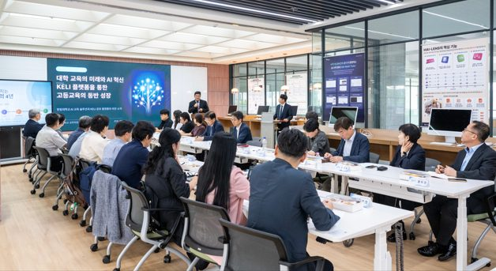

한림대학교 「KELI Connect: 국내 대학 초청 플랫폼 데모 및 교류회」 성황리 개최
2026.07.07 · 한림대학교 커뮤니케이션팀 · 원문 보기

한림대학교(총장 최양희)가 7월 7일(화) 도서관 5층 G.lounge에서 국내 대학 관계자들의 벤치마킹 방문을 계기로 「KELI Connect: 국내 대학 초청 플랫폼 데모 및 교류회」를 개최했다.
이번 방문에는 한국외국어대학교, 전주대학교, 삼육대학교, 동명대학교 관계자 약 40명이 참여해 한림대학교의 AI 기반 교육혁신 사례와 교육 환경 구축 현황을 살펴보고, 대학 간 협력 방안을 논의했다.
행사는 최양희 총장의 환영사를 시작으로 참석자 소개, 한림대학교 AI 교육포털 소개, AI 기술 시연, 질의응답 순으로 진행됐다.
고영웅 교무처장은 한림대학교 AI 교육포털과 KELI 구축 배경, 주요 기능, 운영 성과를 소개하며 AI를 활용한 교수·학습 지원체계와 교육혁신 전략을 설명했다.
이어 이주성 AI 에듀테크센터 기술개발부장은 실제 플랫폼을 활용한 기술 시연을 통해 AI 기반 학습지원 기능과 교육 활용 사례를 선보였다.
방문 대학 관계자들은 플랫폼의 실제 운영 방식과 교육 현장 적용 사례를 살펴보며 대학별 활용 가능성과 AI 기반 교육혁신 방향에 대해 다양한 의견을 나눴다.
특히 AI 기술을 활용한 교수학습 지원과 대학 행정 혁신, 교육데이터 기반 의사 결정 체계 등에 높은 관심을 보이며 활발한 질의응답과 토론을 이어갔다.
최양희 총장은 “AI는 대학 교육의 혁신을 이끄는 핵심 동력이며, 교육의 질을 높이기 위해서는 대학 간 우수사례를 공유하고 함께 발전해 나가는 협력이 무엇보다 중요하다”며 “한림대학교는 앞으로도 AI 기반 교육혁신 경험을 국내외 대학과 적극 공유하고, 교육혁신 생태계 조성을 위한 협력 네트워크를 지속적으로 확대해 미래 고등교육 발전에 기여하겠다”고 말했다.
한림대학교는 이번 벤치마킹 방문을 통해 AI 기반 교육혁신 성과를 공유하고, 대학 간 지속적인 교류와 협력을 확대하는 계기를 마련했다.
앞으로도 교육혁신 우수사례를 확산하고 국내외 대학과의 협력 네트워크를 강화해 미래 고등교육 혁신을 선도해 나갈 계획이다.
출처: 한림대학교 홍보 보도자료.
본문과 사진의 저작권은 한림대학교에 있습니다.